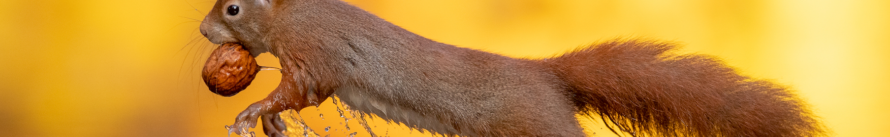

Squirrels are generally small animals, ranging in size from the African pygmy squirrel and least pygmy squirrel at 10–14 cm (3.9–5.5 in) in total length and just 12–26 g (0.42–0.92 oz) in weight, to the Bhutan giant flying squirrel at up to 1.27 m (4 ft 2 in) in total length, and several marmot species, which can weigh 8 kg (18 lb) or more. Squirrels typically have slender bodies with bushy tails and large eyes. In general, their fur is soft and silky, though much thicker in some species than others. The coat color of squirrels is highly variable between—and often even within—species.
In most squirrel species, the hind limbs are longer than the fore limbs, while all species have either four or five toes on each paw. The paws, which include an often poorly developed thumb, have soft pads on the undersides and versatile, sturdy claws for grasping and climbing. Tree squirrels, unlike most mammals, can descend a tree head-first. They do so by rotating their ankles 180 degrees, enabling the hind paws to point backward and thus grip the tree bark from the opposite direction.
Squirrels live in almost every habitat, from tropical rainforest to semiarid desert, avoiding only the high polar regions and the driest of deserts. They are predominantly herbivorous, subsisting on seeds and nuts, but many will eat insects and even small vertebrates.
Many juvenile squirrels die in the first year of life. Adult squirrels can have a lifespan of 5 to 10 years in the wild. Some can survive 10 to 20 years in captivity. Premature death may be caused when a nest falls from the tree, in which case the mother may abandon her young if their body temperature is not correct. Many such baby squirrels have been rescued and fostered by a professional wildlife rehabilitator until they could be safely returned to the wild, although the density of squirrel populations in many places and the constant care required by premature squirrels means that few rehabilitators are willing to spend their time doing this and such animals are routinely euthanized instead.